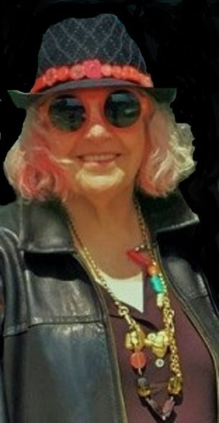

Jester-Knight
Literature
Film
Music
Visual Art
Tributes
Submissions
Links
Contact
Irene Koronas

Biography
Irene Koronas is the author of 9 collections of poetry and collaborative writing including ninth iota (The Knives Forks and Spoons Press, forthcoming 2017), Codify (Éditions du Cygne, forthcoming 2017), heshe egregore (with Daniel Y. Harris, Éditions du Cygne, 2016), Turtle Grass (Muddy River Books, 2014) and Emily Dickinson (Propaganda Press, 2010). Some of her poetry, experimental writing and visual arts have been published in Clarion, Counterexample Poetics, Divine Dirt, E·ratio, experiential-experimental-literature, The Licentiam, Lynx, Lummox, Of\with, Pop Art, Right Hand Pointing, Presa, The Seventh Quarry Magazine, Spreadhead, Stride and The Taos Journal of International Poetry & Art. She is an internationally acclaimed visual and digital artist, having exhibited her visual art at the Tokyo Art Museum Japan, the Henri IV Gallery, the Ponce Art Gallery, Gallery at Bentley College and the M & M Gallery. She is the Managing Editor and Co-Founder of X-Peri and C-Director of the X-Peri Series.
Click below for Irene's work
Poems (.pdf) NEW!!!